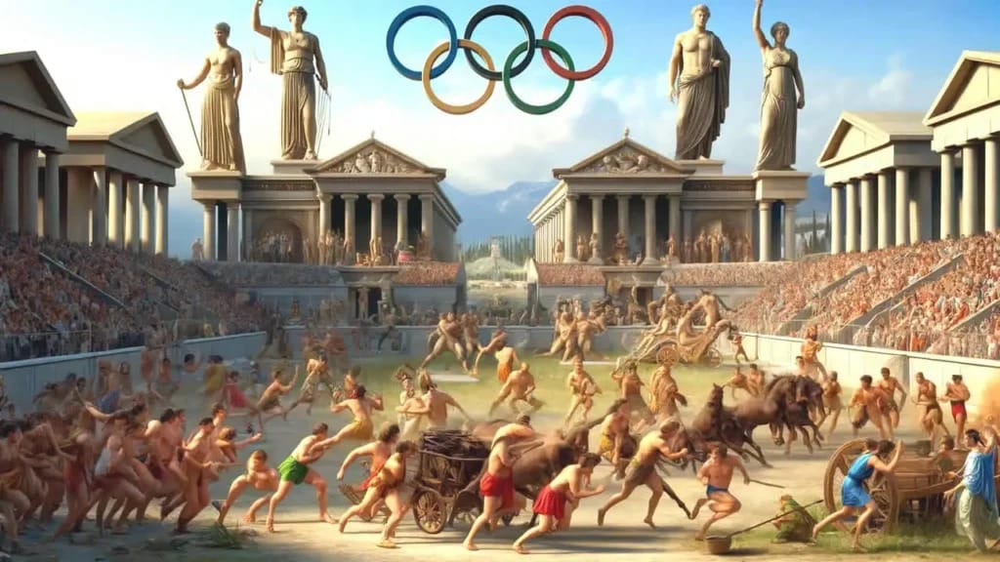
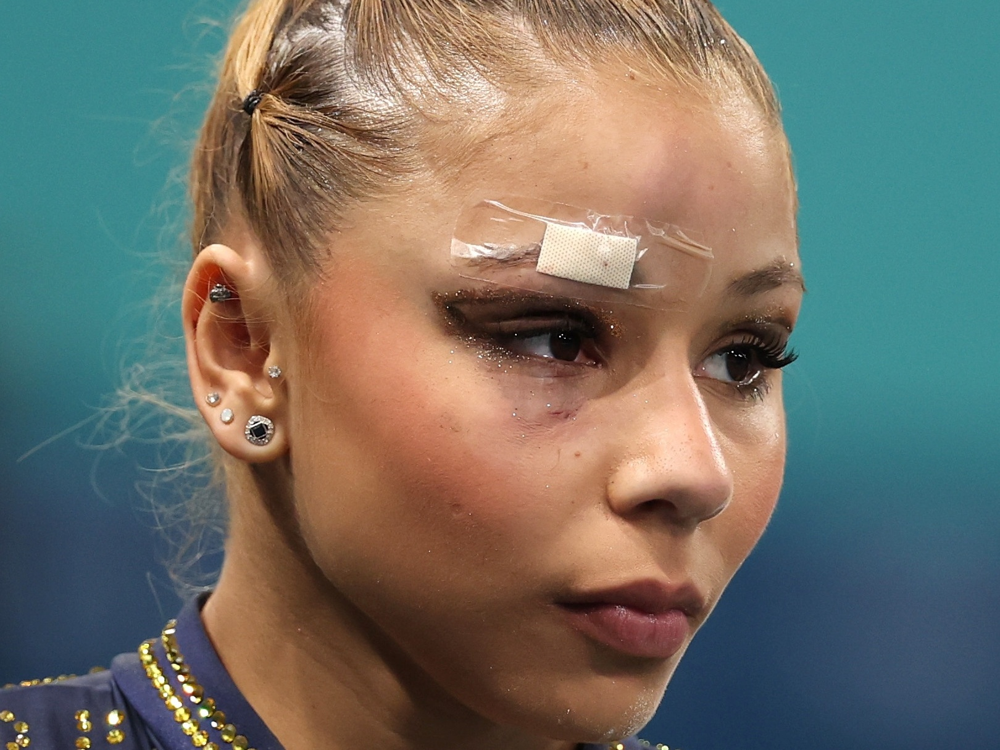
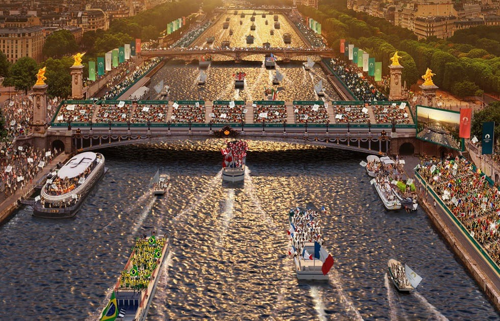
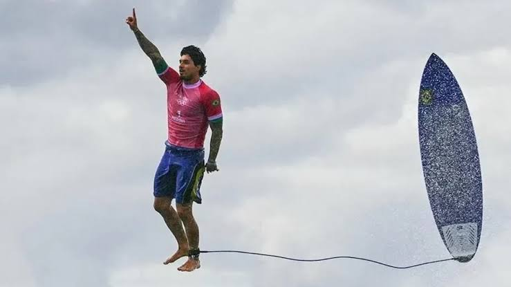
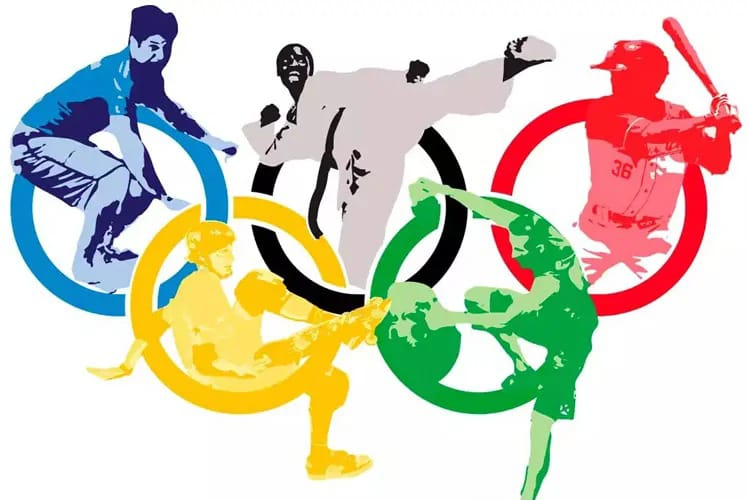

Introdução
As Olimpíadas são muito mais que um evento esportivo; são um verdadeiro encontro mundial de culturas, valores e paixões. Elas celebram o espírito humano em sua busca por excelência, dedicação e superação, reunindo atletas e espectadores de todos os cantos do mundo. Desde a sua criação na Grécia Antiga, os Jogos Olímpicos evoluíram para se tornarem uma das competições mais icônicas e esperadas globalmente. Em 2024, os Jogos em Paris ganham uma nova dimensão, pois, além de celebrar o talento atlético, essa edição foca intensamente na inovação e na sustentabilidade. A capital francesa, que já sediou os Jogos em 1900 e 1924, trará pela primeira vez um compromisso ecológico inédito. Estádios estão sendo alimentados por energia renovável, e as emissões de carbono estão sendo controladas minuciosamente. As inovações tecnológicas também vão enriquecer a experiência dos espectadores, que poderão acompanhar as provas com ângulos e detalhes nunca antes vistos, graças ao uso de câmeras de alta definição e tecnologias de realidade aumentada.
Questão das Mulheres nos Jogos Olímpicos
A trajetória das mulheres nos Jogos Olímpicos é uma história de resistência e conquista. Em 1900, nas Olimpíadas de Paris, apenas 22 mulheres participaram, competindo em tênis e golfe, enquanto mais de mil homens disputavam as demais provas. A inclusão de modalidades femininas foi um processo gradual, impulsionado por movimentos de igualdade e pela pressão para que o Comitê Olímpico Internacional reconhecesse a importância da representatividade. A partir de 2012, pela primeira vez na história, todos os países participantes tinham mulheres em suas delegações, marcando um avanço histórico para a inclusão no esporte. Em 2024, Paris verá um equilíbrio quase completo entre atletas homens e mulheres, com um grande aumento nas modalidades mistas, refletindo um marco na luta pela igualdade de gênero. A inclusão de esportes como boxe e luta para mulheres é emblemática, mostrando que a habilidade atlética não deve ser limitada por gênero. Cada avanço representa não só uma conquista esportiva, mas também um passo crucial para a igualdade em todos os níveis da sociedade.
Polêmicas
Os Jogos Olímpicos de Paris 2024 têm gerado uma série de debates, muitos dos quais refletem as complexidades do mundo moderno. Uma das polêmicas centrais é a inclusão de atletas transgêneros, que levanta questões sobre equidade e as normas biológicas nas competições. Embora essa inclusão seja vista como um avanço nos direitos e na inclusão social, críticos argumentam que é necessário encontrar um equilíbrio para garantir que as competições sejam justas para todos os envolvidos. Outro ponto crítico envolve a qualidade da água do Rio Sena, que será utilizado para as provas de natação em águas abertas e triatlo. Para tornar o rio adequado às competições, as autoridades francesas tiveram que investir milhões na despoluição, enfrentando críticas sobre a eficácia e os custos envolvidos. Além disso, a realização dos Jogos em meio a um cenário econômico global delicado trouxe à tona debates sobre os impactos financeiros e o legado econômico deixado por esses eventos. No geral, as Olimpíadas de 2024 refletem tanto os avanços como as controvérsias que permeiam o esporte em um mundo globalizado.
Jogos em Destaque
Nas Olimpíadas de Paris, muitos atletas brasileiros se destacaram, trazendo orgulho ao país e reforçando a tradição esportiva do Brasil. Rebeca Andrade, com sua performance espetacular na ginástica artística, conquistou quatro medalhas, consolidando-se como uma das maiores atletas brasileiras de todos os tempos. Sua habilidade, determinação e carisma inspiraram jovens em todo o país, tornando-se um exemplo de perseverança. No atletismo, Alison dos Santos se destacou nos 400m com barreiras, vencendo competições acirradas e mostrando a força do atletismo brasileiro no cenário mundial. No futebol feminino, o Brasil avançou até as semifinais, demonstrando crescimento e competitividade em um esporte tradicionalmente dominado por seleções europeias e norte-americanas. Outro grande nome foi Keno Machado, no boxe, que com sua força e técnica conseguiu uma medalha de ouro, marcando um feito histórico para o Brasil no boxe olímpico. O desempenho desses atletas não apenas representa conquistas individuais, mas também reflete o esforço coletivo e o apoio das confederações esportivas brasileiras para o desenvolvimento do esporte no país.
História das Olimpíadas
As Olimpíadas modernas foram estabelecidas pelo Barão Pierre de Coubertin em 1896, com o objetivo de promover a paz e a união entre os povos. A primeira edição foi realizada em Atenas, Grécia, como uma homenagem aos antigos Jogos Olímpicos realizados em Olímpia. Desde então, os Jogos Olímpicos evoluíram em escala e importância, tornando-se o maior evento esportivo do mundo. De um evento predominantemente europeu, os Jogos expandiram-se para incluir atletas de todos os continentes, promovendo não só a excelência esportiva, mas também a inclusão e a diversidade. Cada edição tem suas histórias de superação, conquistas e desafios, como os boicotes durante a Guerra Fria e o atentado em Munique 1972, que marcaram profundamente a história olímpica. Ao longo dos anos, as Olimpíadas têm se adaptado às mudanças sociais e políticas, sendo a inclusão de esportes urbanos como skate e surfe nos Jogos de 2020 um exemplo do esforço para manter os Jogos relevantes e conectados às novas gerações. Paris 2024 continua esse legado, inovando com novas modalidades e um forte compromisso com a sustentabilidade e a inclusão social.
Vídeos
Acompanhe os melhores momentos das Olimpíadas com uma seleção de vídeos que capturam a emoção, os desafios e as vitórias dos atletas. Clique nos links abaixo para acessar cada vídeo: